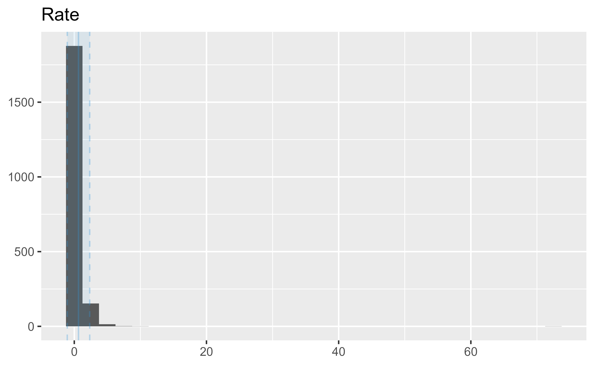

[ROWS] 12256
[PAGES] 3
[FIELDS] 6
[MODIFIED] 2024-08-29
[PERIODICITY] Annually [R/P1Y]
[TEMPORAL] 2015-01-01 • 2024-12-31
[DICTIONARY] https://data.cms.gov/resources/deficit-reduction-act-dra-hospital-acquired-condition-hac-measures-data-dictionary
[SITE] https://data.cms.gov/quality-of-care/deficit-reduction-act-hospital-acquired-condition-measures
[REFERENCES] https://data.cms.gov/resources/deficit-reduction-act-dra-hospital-acquired-condition-hac-measures-methodology
[RESOURCES] https://data.cms.gov/data-api/v1/dataset-resources/01edb62e-5c45-4f43-8c91-16cba21cbb74
[DOWNLOAD] https://data.cms.gov/sites/default/files/2024-08/17fde1a0-9199-422c-8d6c-f9155ff47efb/HAC_MEASURE_PROVIDER_FILE_2024.csv
16 DRA HAC Measures
The Publicly Reported Deficit Reduction Act (DRA) Hospital-Acquired Condition (HAC) Measures data provides information on hospital-level measures rates for four of the HACs included in the DRA HAC payment provision for Medicare fee-for-service discharges:
- Foreign Object Retained After Surgery
- Blood Incompatibility
- Air Embolism
- Falls and Trauma
The Publicly Reported DRA HAC Measures are for informational and quality improvement purposes only; the results do not affect payment and are not a part of the HAC Reduction Program.
Metadata
Resources
[CSV] 922K 2024 DRA HAC Measures
[PDF] 140K 2024 DRA HAC Measures Methodology
[PDF] 117K 2024 DRA HAC Measures Data Dictionary
Dictionary
Provider_ID
Provider's CCN.
Measure
DRA HAC measure name: Foreign Object
Retained After Surgery, Air Embolism, Blood
Incompatibility, or Falls and Trauma (incl.
fractures, dislocations, intracranial injuries,
crushing injuries, burns, other injuries).
Rate
DRA HAC measure rate result, reported as observed
rates per 1,000 discharges.
Footnote
Rate footnote: Data based on facility claims
submitted to CMS with reported discrepancies.
Start_Quarter
First Quarter of the DRA HAC measure's discharge
period.
End_Quarter
Last quarter of the DRA HAC measure's discharge
period.
Data
# A tibble: 2,048 × 6
Provider_ID Measure Rate Footnote Start_Quarter End_Quarter
obs: 2048
cols: 6
----- Numeric -----
col n_missng p_complt n_unique mean p0 p25 p50 p75 p100
1 Rate 0 1 1016 0.64 0.019 0.24 0.44 0.74 71.4
iqr sd hist
1 0.5 1.7 ▇▁▁▁▁
----- Categorical -----
col n_missng p_complt n_unique n_levels min
1 Provider_ID 0 1 1818 NA 010001
2 Measure 0 1 4 4 Air Embolism
3 Footnote 2039 0.0044 1 NA 23
4 Start_Quarter 0 1 1 NA 3Q2021
5 End_Quarter 0 1 1 NA 2Q2023
max
1 670132
2 Foreign Object Retained After Surgery
3 23
4 3Q2021
5 2Q2023
Distribution
Measure | Variable | Mean | SD
--------------------------------------------------------------
Air Embolism | Rate | 0.23 | 0.58
Blood Incompatibility | Rate | 0.19 | 0.25
Falls and Trauma | Rate | 0.70 | 1.80
Foreign Object Retained After Surgery | Rate | 0.22 | 0.38
Measure | IQR | Range
------------------------------------------------------------
Air Embolism | 0.07 | [0.05, 2.89]
Blood Incompatibility | 0.06 | [0.02, 0.84]
Falls and Trauma | 0.49 | [0.07, 71.43]
Foreign Object Retained After Surgery | 0.13 | [0.02, 4.05]
Measure | Skewness | Kurtosis | n | n_Missing
------------------------------------------------------------------------------
Air Embolism | 4.74 | 22.62 | 23 | 0
Blood Incompatibility | 2.24 | 4.62 | 11 | 0
Falls and Trauma | 33.99 | 1323.95 | 1792 | 0
Foreign Object Retained After Surgery | 7.16 | 62.46 | 222 | 0
